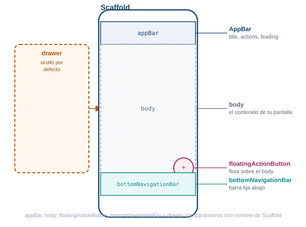
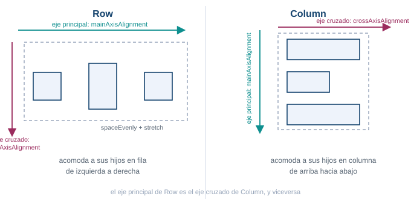
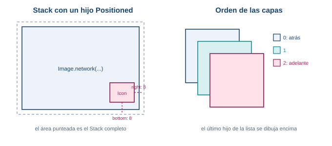
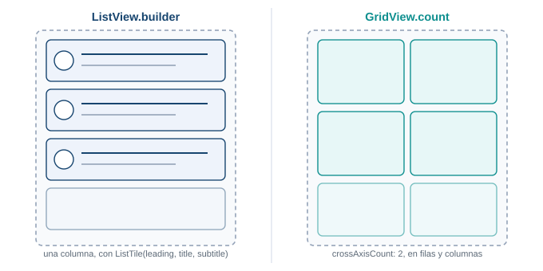
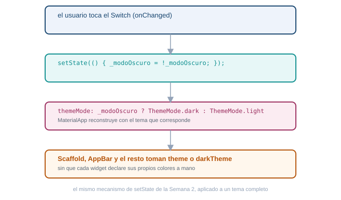

Semana 4. Material Design y widgets
| Asignatura | Programación Móvil (IF2004) |
| Grupos | 601 y 602 de Ingeniería Informática |
| Unidad | Unidad 2. Interfaz, datos y persistencia |
1 Lo que vas a lograr
Hasta ahora has visto Dart, la anatomía de un proyecto Flutter y una pantalla mínima con setState. Esta semana entras de lleno al catálogo de widgets que vas a usar todos los días: los que arman una pantalla, los que reciben interacción del usuario, los que organizan el espacio y los que muestran listas y cuadrículas. También aprendes a dar a tu app un tema claro y uno oscuro, y a alternar entre ellos.
Hoy no tocas el proyecto de tu equipo. Trabajas en un proyecto Flutter nuevo y vacío, solo para jugar con widgets sin arriesgar nada. Al final de la semana llevas lo aprendido a las pantallas reales de tu proyecto.
Al terminar la guía sabes:
- Explicar para qué sirve cada parámetro de
Scaffoldy armar una pantalla completa conAppBar, cuerpo, botón flotante y barra de navegación inferior. - Dar estilo a un texto con
TextStyley reaccionar a toques con los cinco widgets de botón más comunes de Material. - Mostrar imágenes propias y de internet, y capturar texto del usuario con
TextField. - Distribuir widgets en pantalla con el catálogo completo de layout de Flutter (
Container,Row,Column,Stacky el resto), entendiendo la diferencia entre eje principal y eje cruzado, y cuándo superponer en vez de organizar en un eje. - Mostrar colecciones de datos con
ListView.builderyGridView.builder. - Definir un tema claro y uno oscuro con
ThemeDatay alternar entre ellos consetState.
Necesitas el entorno de Flutter funcionando desde la Semana 1, verificado con flutter doctor, y el repositorio de tu equipo de la Semana 3 con flutter run corriendo sin errores. No lo vas a tocar durante la sesión con acompañamiento, pero sí en tu trabajo independiente.
Esta guía usa Flutter 3.41.9 (canal stable) y Dart SDK 3.11.5, las mismas versiones verificadas desde la Semana 2.
2 Parte teórica
MaterialApp: la raíz de tu app
MaterialApp es el widget que envuelve toda tu aplicación cuando sigues el lenguaje de diseño Material de Google. Configura la navegación, el tema y el texto que ve el sistema operativo en el selector de apps recientes.
MaterialApp(
title: 'Taller de widgets',
theme: ThemeData(colorScheme: ColorScheme.fromSeed(seedColor: Colors.teal)),
home: const PantallaPrincipal(),
)| Atributo | Para qué sirve |
|---|---|
home |
El widget que se muestra primero al abrir la app |
title |
El nombre de la app que ve el sistema operativo, no un texto visible en pantalla |
theme |
El tema claro, un objeto ThemeData |
darkTheme |
El tema oscuro, otro ThemeData |
themeMode |
Cuál de los dos temas usar: ThemeMode.light, ThemeMode.dark o ThemeMode.system |
debugShowCheckedModeBanner |
Si es false, quita la cinta roja de “Debug” en la esquina |
ColorScheme.fromSeed(seedColor: Colors.teal) genera automáticamente toda una paleta de colores coherente (primario, secundario, superficie, error) a partir de un solo color semilla. Es la forma moderna de definir el esquema de color de Material 3, que Flutter usa por defecto desde hace varias versiones.
Scaffold: el esqueleto de una pantalla
Scaffold implementa la estructura visual básica de Material: una posición fija para la barra superior, el cuerpo, el botón flotante, la barra inferior y el menú lateral. Casi toda pantalla de tu app empieza con un Scaffold.

Cada región de la pantalla es un parámetro con nombre de Scaffold.
Scaffold(
appBar: AppBar(title: const Text('Taller de widgets')),
body: const Center(child: Text('Hola, Flutter')),
floatingActionButton: FloatingActionButton(
onPressed: () {},
child: const Icon(Icons.add),
),
bottomNavigationBar: BottomNavigationBar(
currentIndex: 0,
onTap: (indice) {},
items: const [
BottomNavigationBarItem(icon: Icon(Icons.home), label: 'Inicio'),
BottomNavigationBarItem(icon: Icon(Icons.settings), label: 'Ajustes'),
],
),
)| Atributo | Para qué sirve |
|---|---|
appBar |
La barra superior, casi siempre un AppBar |
body |
El contenido principal de la pantalla |
floatingActionButton |
Un botón circular que flota sobre el cuerpo, para la acción más importante |
backgroundColor |
El color de fondo detrás del body |
bottomNavigationBar |
Una barra fija abajo, para cambiar entre secciones principales |
drawer |
Un menú lateral oculto que aparece deslizando desde el borde izquierdo |
Un drawer se abre deslizando el dedo desde el borde izquierdo de la pantalla, o tocando el ícono de menú que AppBar agrega solo cuando el Scaffold tiene un drawer configurado.
AppBar: la barra superior
AppBar(
title: const Text('Taller de widgets'),
backgroundColor: Colors.teal,
foregroundColor: Colors.white,
actions: [
IconButton(onPressed: () {}, icon: const Icon(Icons.search)),
],
)| Atributo | Para qué sirve |
|---|---|
title |
El widget que aparece como título, casi siempre un Text |
actions |
Una lista de widgets a la derecha, casi siempre IconButton |
leading |
El widget a la izquierda del título, por defecto la flecha de volver si hay una pantalla anterior |
backgroundColor |
El color de fondo de la barra |
foregroundColor |
El color del título, los íconos y el texto de la barra |
Text y TextStyle: mostrar texto con estilo
Text muestra una cadena de texto. Todo su estilo visual vive en un objeto TextStyle aparte, pasado al parámetro style.
const Text(
'Precio especial',
style: TextStyle(
fontSize: 22,
fontWeight: FontWeight.bold,
fontStyle: FontStyle.italic,
color: Colors.teal,
decoration: TextDecoration.underline,
letterSpacing: 1.2,
),
)Propiedad de TextStyle |
Para qué sirve |
|---|---|
fontSize |
Tamaño de la letra, en puntos lógicos |
fontWeight |
Grosor: FontWeight.normal, FontWeight.bold, o un valor de w100 a w900 |
fontStyle |
FontStyle.normal o FontStyle.italic |
color |
Color del texto |
backgroundColor |
Color detrás del texto, como un resaltador |
decoration |
Línea sobre el texto: underline, lineThrough, overline o none |
letterSpacing |
Espacio extra entre letras |
Cuando el texto no cabe en el espacio disponible, dos propiedades de Text (no de TextStyle) controlan qué pasa:
const Text(
'Un texto muy largo que no cabe completo en una sola línea de la pantalla del teléfono',
maxLines: 1,
overflow: TextOverflow.ellipsis,
)Atributo de Text |
Para qué sirve |
|---|---|
maxLines |
Cuántas líneas ocupa el texto como máximo |
overflow |
Qué hacer con lo que sobra: TextOverflow.ellipsis agrega puntos suspensivos, clip lo corta sin aviso, fade lo desvanece |
textAlign |
Alineación horizontal del texto dentro de su espacio: left, center, right, justify |
maxLines limita cuántas líneas ocupa el texto. overflow: TextOverflow.ellipsis corta lo que sobra y agrega puntos suspensivos, en vez de desbordar la pantalla o lanzar una advertencia.
Botones: cinco formas de reaccionar a un toque
Material define varios widgets de botón, cada uno con una jerarquía visual distinta: úsalos para decirle al usuario cuál acción es la principal y cuáles son secundarias.
ElevatedButton(
onPressed: () {
print('Guardado');
},
style: ElevatedButton.styleFrom(backgroundColor: Colors.teal),
child: const Text('Guardar'),
)
OutlinedButton(onPressed: () {}, child: const Text('Cancelar'))
TextButton(onPressed: () {}, child: const Text('Más tarde'))
IconButton(onPressed: () {}, icon: const Icon(Icons.favorite))
FloatingActionButton(onPressed: () {}, child: const Icon(Icons.add))| Widget | Cuándo usarlo |
|---|---|
ElevatedButton |
La acción principal de la pantalla, con relieve |
OutlinedButton |
Una acción secundaria, con borde y sin relleno |
TextButton |
Una acción de menor peso visual, solo texto |
IconButton |
Una acción representada por un ícono, sin texto |
FloatingActionButton |
La acción más importante de toda la pantalla, flotando sobre el body |
| Atributo compartido | Para qué sirve |
|---|---|
onPressed |
La función que corre al tocar el botón. Si vale null, el botón aparece gris y no responde: es la forma estándar de deshabilitarlo |
onLongPress |
La función que corre al mantener presionado el botón |
child |
El contenido del botón. IconButton es la excepción: el suyo va en icon, no en child |
style |
Personaliza colores, forma y relleno, por ejemplo con ElevatedButton.styleFrom(backgroundColor: ...) |
Los cinco comparten onPressed, la función que corre al tocar el botón. Cuatro reciben su contenido en child; IconButton es la excepción, porque su contenido va en icon, no en child. Si onPressed vale null, el botón aparece gris y no responde al toque: es la forma estándar de deshabilitarlo.
Antes de seguir, arma una pantalla con Scaffold, un AppBar con tu nombre como título, y en el body un Text con tu carrera en letra grande y negrita, seguido de dos botones: uno ElevatedButton que imprima “Contactar” en la consola, y uno OutlinedButton que imprima “Ver perfil”.
Scaffold(
appBar: AppBar(title: const Text('Tu Nombre')),
body: Padding(
padding: const EdgeInsets.all(16),
child: Column(
crossAxisAlignment: CrossAxisAlignment.start,
children: [
const Text(
'Ingeniería Informática',
style: TextStyle(fontSize: 22, fontWeight: FontWeight.bold),
),
const SizedBox(height: 16),
ElevatedButton(
onPressed: () => print('Contactar'),
child: const Text('Contactar'),
),
const SizedBox(height: 8),
OutlinedButton(
onPressed: () => print('Ver perfil'),
child: const Text('Ver perfil'),
),
],
),
),
)Image: mostrar imágenes
Flutter carga imágenes desde dos orígenes distintos, con dos constructores separados.
Image.network(
'https://docs.flutter.dev/assets/images/dash/dash-fainting.gif',
height: 150,
)
Image.asset(
'assets/imagenes/logo.png',
width: 100,
fit: BoxFit.cover,
)Image.network descarga la imagen de una dirección de internet cada vez que se muestra. Image.asset carga un archivo empacado dentro de tu propia app: primero lo declaras en pubspec.yaml, dentro de la clave flutter:
flutter:
assets:
- assets/imagenes/| Atributo | Para qué sirve |
|---|---|
width / height |
Tamaño al que se fuerza la imagen |
fit |
Cómo rellenar ese tamaño: BoxFit.cover, BoxFit.contain, BoxFit.fill |
TextField: capturar texto del usuario
final controladorCorreo = TextEditingController();
TextField(
controller: controladorCorreo,
decoration: const InputDecoration(
labelText: 'Correo',
hintText: 'nombre@correo.com',
prefixIcon: Icon(Icons.email),
border: OutlineInputBorder(),
),
)| Atributo | Para qué sirve |
|---|---|
controller |
Un TextEditingController que guarda y permite leer o cambiar el texto escrito |
decoration |
Un InputDecoration con la apariencia del campo |
decoration.labelText |
Etiqueta que flota arriba cuando el campo tiene texto o foco |
decoration.hintText |
Texto tenue que desaparece al escribir |
decoration.prefixIcon |
Un ícono a la izquierda del texto |
decoration.border |
El borde del campo, por ejemplo OutlineInputBorder() para un recuadro completo |
El controller es lo que te permite leer después lo que el usuario escribió, con controladorCorreo.text, o limpiarlo con controladorCorreo.clear().
Widgets de layout: el catálogo completo
Flutter no tiene un solo widget para organizar pantallas: tiene una familia completa, cada uno resolviendo un problema distinto. Se agrupan en tres ideas:
- Envuelven a un solo hijo para darle tamaño, espacio o posición:
Container,Padding,Center,Align,SizedBox. - Organizan a varios hijos en un eje o en una rejilla:
Row,Column,Wrap(y más abajoListView/GridView, que por manejar su propio desplazamiento tienen sección aparte). - Superponen capas o envuelven la pantalla completa:
StackyPositionedapilan widgets uno sobre otro;SingleChildScrollViewySafeArearesuelven el desplazamiento y los bordes del dispositivo.
No vas a usar los diecisiete en el laboratorio de hoy, pero sí vas a encontrarlos todo el semestre: conviene saber qué hace cada uno y cuándo alcanza.
Container, Padding y SizedBox: controlar el espacio de un solo hijo
Antes de organizar varios widgets juntos, necesitas controlar el espacio de uno solo.
Container(
width: double.infinity,
padding: const EdgeInsets.all(16),
color: Colors.teal.shade50,
child: const Text('Contenido con espacio alrededor'),
)
Padding(
padding: const EdgeInsets.symmetric(horizontal: 16, vertical: 8),
child: const Text('Con margen interno'),
)
const SizedBox(height: 24)| Widget | Atributos principales | Para qué sirve |
|---|---|---|
Container |
width, height, padding, margin, color, decoration, alignment, child |
Una caja con tamaño, color, borde y espacio interno, todo en un solo widget |
Padding |
padding, child |
Agrega espacio interno alrededor de un solo hijo, sin color ni borde |
SizedBox |
width, height, child |
Fuerza un ancho y alto exactos, o crea un espacio vacío entre dos widgets cuando no lleva child |
Constructor de EdgeInsets |
Para qué sirve |
|---|---|
EdgeInsets.all(16) |
El mismo espacio en los cuatro lados |
EdgeInsets.symmetric(horizontal:, vertical:) |
Espacio distinto entre lados opuestos |
EdgeInsets.only(top:, left:, ...) |
Espacio distinto en cada lado, uno por uno |
Center y Align: ubicar un hijo dentro del espacio disponible
Center(
child: const Icon(Icons.check_circle, size: 48),
)
Align(
alignment: Alignment.bottomRight,
child: const Icon(Icons.info_outline),
)| Widget | Atributos principales | Para qué sirve |
|---|---|---|
Center |
child, widthFactor, heightFactor |
Centra a su hijo dentro del espacio disponible |
Align |
alignment, child, widthFactor, heightFactor |
Ubica a su hijo en cualquier punto del espacio disponible, no solo el centro |
Center es en realidad Align con alignment: Alignment.center. Alignment trae valores listos para usar: Alignment.topLeft, Alignment.center, Alignment.bottomRight, y el resto de las ocho combinaciones.
Row y Column: los widgets que organizan todo
Row acomoda a sus hijos en una fila horizontal. Column los acomoda en una columna vertical. Son, después de Scaffold, los widgets que más vas a escribir en Flutter.

El eje principal de uno es el eje cruzado del otro.
Cada uno tiene dos ejes. El eje principal es la dirección en la que se reparten los hijos (horizontal en Row, vertical en Column). El eje cruzado es la dirección perpendicular.
Row(
mainAxisAlignment: MainAxisAlignment.spaceEvenly,
crossAxisAlignment: CrossAxisAlignment.center,
children: const [
Icon(Icons.star),
Text('Favorito'),
Icon(Icons.star),
],
)
Column(
mainAxisAlignment: MainAxisAlignment.center,
crossAxisAlignment: CrossAxisAlignment.stretch,
children: [
const Text('Bienvenido'),
ElevatedButton(onPressed: () {}, child: const Text('Continuar')),
],
)| Atributo | Para qué sirve |
|---|---|
mainAxisAlignment |
Cómo repartir los hijos sobre el eje principal: start, center, end, spaceBetween, spaceEvenly, spaceAround |
crossAxisAlignment |
Cómo alinear los hijos sobre el eje cruzado: start, center, end, stretch |
mainAxisSize |
Si el widget ocupa todo el espacio disponible (max, el valor por defecto) o solo lo que necesitan sus hijos (min) |
children |
La lista ordenada de widgets hijos |
Expanded y Flexible: repartir el espacio sobrante
Row(
children: [
const Text('Nombre'),
const SizedBox(width: 8),
Expanded(child: TextField(controller: controladorCorreo)),
],
)
Row(
children: [
Flexible(child: Text('Texto que puede achicarse')),
Container(width: 80, height: 24, color: Colors.teal.shade100),
],
)
Column(
children: const [
Text('Arriba'),
Spacer(),
Text('Abajo'),
],
)| Widget | Atributos principales | Para qué sirve |
|---|---|---|
Expanded |
flex, child |
Obliga a su hijo a ocupar todo el espacio sobrante sobre el eje principal de un Row/Column |
Flexible |
flex, fit, child |
Permite que su hijo ocupe hasta cierto espacio, pero sin forzarlo si el contenido es más chico |
Spacer |
flex |
Un espacio vacío y flexible entre widgets; equivale a un Expanded sin contenido |
Expanded es en realidad Flexible con fit: FlexFit.tight: la diferencia real es que Flexible (con el fit por defecto, FlexFit.loose) deja que el hijo sea más chico que el espacio asignado si su contenido no lo llena, mientras que Expanded siempre ocupa el espacio completo. Los tres widgets solo funcionan como hijos directos de un Row, Column o Flex.
El siguiente código lanza un error de desbordamiento en pantallas angostas, porque tres widgets de ancho fijo no caben en una fila:
Row(
children: [
Text('Nombre completo del producto'),
Icon(Icons.star),
Text('4.8'),
],
)Corrígelo para que el nombre del producto se recorte con puntos suspensivos en vez de desbordar, sin tocar el ícono ni la calificación.
Row(
children: [
Expanded(
child: Text(
'Nombre completo del producto',
overflow: TextOverflow.ellipsis,
maxLines: 1,
),
),
const Icon(Icons.star),
const Text('4.8'),
],
)Expanded le da al Text un ancho definido en vez de “todo el infinito”, y con ese ancho ya definido overflow: TextOverflow.ellipsis tiene sobre qué recortar.
Wrap: cuando una fila no alcanza
Wrap(
spacing: 8,
runSpacing: 8,
children: const [
Chip(label: Text('Dart')),
Chip(label: Text('Flutter')),
Chip(label: Text('Firebase')),
Chip(label: Text('SQLite')),
Chip(label: Text('Git')),
],
)| Atributo | Para qué sirve |
|---|---|
direction |
Eje principal: Axis.horizontal (por defecto, como Row) o Axis.vertical (como Column) |
spacing |
Espacio entre elementos dentro de la misma línea |
runSpacing |
Espacio entre una línea y la siguiente |
alignment |
Cómo alinear los elementos dentro de cada línea |
Wrap se comporta como Row o Column, pero cuando sus hijos no caben en una sola línea, salta a la siguiente en vez de desbordar. Úsalo para listas de etiquetas o filtros de longitud variable.
Stack y Positioned: superponer capas
Stack no reparte a sus hijos en un eje: los dibuja unos encima de otros, en el orden de la lista children (el último queda arriba de todos). Positioned fija la distancia de un hijo respecto a los bordes del Stack que lo contiene, y solo funciona directamente dentro de uno.

El último hijo de la lista se dibuja encima de los anteriores.
Stack(
children: [
Image.network(
'https://docs.flutter.dev/assets/images/dash/dash-fainting.gif',
),
Positioned(
bottom: 8,
right: 8,
child: const Icon(Icons.favorite, color: Colors.red),
),
],
)| Widget | Atributos principales | Para qué sirve |
|---|---|---|
Stack |
children, alignment, fit |
Superpone widgets; alignment ubica a los hijos que no llevan Positioned; fit decide si el Stack sin restricciones toma el tamaño del hijo más grande (StackFit.loose, por defecto) o el del propio Stack (StackFit.expand) |
Positioned |
top, bottom, left, right, width, height, child |
Fija la distancia de un hijo respecto a un borde del Stack |
SingleChildScrollView: desplazar contenido de tamaño fijo
SingleChildScrollView(
padding: const EdgeInsets.all(16),
child: Column(
children: const [
Text('Términos y condiciones'),
// el resto de un texto largo que no cabe en una pantalla
],
),
)| Atributo | Para qué sirve |
|---|---|
scrollDirection |
Eje del desplazamiento: Axis.vertical (por defecto) u Axis.horizontal |
child |
Un único widget, casi siempre una Column, con contenido de tamaño ya conocido |
padding |
Espacio interno alrededor de todo el contenido desplazable |
No metas una ListView o GridView larga dentro de un SingleChildScrollView: los dos manejan su propio desplazamiento, y combinarlos produce el mismo error de altura sin límite que ves más adelante en “Errores frecuentes”.
SafeArea: evitar el notch y la cámara perforada
SafeArea(
child: Container(
color: Colors.black,
child: Image.asset('assets/images/fondo.jpg', fit: BoxFit.cover),
),
)| Atributo | Para qué sirve |
|---|---|
child |
El contenido que se protege |
top, bottom, left, right |
Si aplicar el margen de seguridad en ese lado; los cuatro son true por defecto |
Scaffold ya aplica SafeArea automáticamente en su body. Envuélvelo tú mismo solo cuando dibujas contenido a pantalla completa por fuera de un Scaffold, por ejemplo una imagen de fondo detrás de todo.
ListView y GridView también organizan varios hijos, pero por manejar su propio desplazamiento tienen sección propia, justo debajo de esta.
Listas: ListView y ListTile
ListView muestra una columna de widgets que se desliza cuando no caben todos en la pantalla. ListView.builder construye cada elemento bajo demanda, a partir de una lista de datos: es la forma correcta de mostrar listas largas sin crear todos los widgets de una vez.
final productos = ['Manzana', 'Pan', 'Leche', 'Café'];
ListView.builder(
itemCount: productos.length,
itemBuilder: (context, indice) {
return ListTile(
leading: const Icon(Icons.shopping_bag),
title: Text(productos[indice]),
subtitle: Text('Producto número ${indice + 1}'),
trailing: const Icon(Icons.chevron_right),
onTap: () {},
);
},
)| Atributo | Para qué sirve |
|---|---|
itemCount |
Cuántos elementos tiene la lista |
itemBuilder |
Una función que recibe el índice y devuelve el widget de ese elemento |
ListTile.leading |
Widget a la izquierda, casi siempre un ícono o una imagen pequeña |
ListTile.title |
El texto principal de la fila |
ListTile.subtitle |
Un texto secundario debajo del título |
ListTile.trailing |
Widget a la derecha, casi siempre una flecha o un ícono de acción |
ListTile.onTap |
Función que corre al tocar la fila completa |
Cuadrículas: GridView
GridView organiza a sus hijos en filas y columnas en vez de una sola columna. GridView.count fija cuántas columnas quieres; GridView.builder construye cada elemento bajo demanda, igual que ListView.builder, y es la opción correcta para cuadrículas largas.

Misma idea de construir bajo demanda, distinta forma de acomodar.
GridView.count(
crossAxisCount: 2,
mainAxisSpacing: 12,
crossAxisSpacing: 12,
children: List.generate(6, (indice) {
return Container(
color: Colors.teal.shade100,
child: Center(child: Text('Item $indice')),
);
}),
)
GridView.builder(
gridDelegate: const SliverGridDelegateWithFixedCrossAxisCount(
crossAxisCount: 2,
childAspectRatio: 1.2,
),
itemCount: productos.length,
itemBuilder: (context, indice) {
return Card(child: Center(child: Text(productos[indice])));
},
)| Atributo | Para qué sirve |
|---|---|
crossAxisCount |
Cuántas columnas tiene la cuadrícula |
mainAxisSpacing / crossAxisSpacing |
Separación entre filas y entre columnas |
childAspectRatio |
Relación ancho entre alto de cada celda: mayor que 1 da celdas más anchas que altas |
gridDelegate |
En GridView.builder, el objeto que define la forma de la cuadrícula |
Temas claro y oscuro
Un tema es un objeto ThemeData con los colores, tipografías y formas que usan todos los widgets de Material sin que cada uno los declare por su cuenta. MaterialApp acepta dos: theme para el modo claro y darkTheme para el modo oscuro. themeMode decide cuál se usa en cada momento.
En la Semana 2 usaste setState para cambiar una variable propia de una pantalla. Hoy aplicas exactamente el mismo mecanismo a un nivel más alto: la variable que cambia decide el tema de toda la app, no solo un texto en pantalla. Si quieres repasar el ciclo completo de setState y del árbol de widgets por dentro, ese detalle está en el complemento de arquitectura de Flutter de la Semana 2.

El mismo setState de siempre, ahora cambiando un tema completo.
class MiApp extends StatefulWidget {
const MiApp({super.key});
@override
State<MiApp> createState() => _MiAppState();
}
class _MiAppState extends State<MiApp> {
bool _modoOscuro = false;
@override
Widget build(BuildContext context) {
return MaterialApp(
theme: ThemeData(
colorScheme: ColorScheme.fromSeed(seedColor: Colors.teal),
),
darkTheme: ThemeData(
colorScheme: ColorScheme.fromSeed(
seedColor: Colors.teal,
brightness: Brightness.dark,
),
),
themeMode: _modoOscuro ? ThemeMode.dark : ThemeMode.light,
home: Scaffold(
appBar: AppBar(title: const Text('Tema claro y oscuro')),
body: Center(
child: Switch(
value: _modoOscuro,
onChanged: (valor) {
setState(() {
_modoOscuro = valor;
});
},
),
),
),
);
}
}Cualquier widget más abajo en el árbol lee el tema activo con Theme.of(context), sin importar si está en modo claro u oscuro:
Container(
color: Theme.of(context).colorScheme.primaryContainer,
child: Text(
'Uso el color del tema actual',
style: Theme.of(context).textTheme.titleMedium,
),
)Reescribe el ejemplo de arriba cambiando el Switch por un IconButton, que muestre Icons.dark_mode cuando el tema es claro y Icons.light_mode cuando es oscuro, y alterne _modoOscuro al tocarlo.
IconButton(
icon: Icon(_modoOscuro ? Icons.light_mode : Icons.dark_mode),
onPressed: () {
setState(() {
_modoOscuro = !_modoOscuro;
});
},
)3 Laboratorio
Sigue los pasos en orden, en el proyecto de práctica desechable de hoy. Guarda después de cada cambio y observa la recarga en caliente.
1 Crea el proyecto de práctica
flutter create taller_widgets
cd taller_widgets
flutter runConfirma que la app de plantilla (el contador) corre en tu emulador o dispositivo antes de seguir.
2 Limpia main.dart y arma el Scaffold base
Reemplaza el contenido de lib/main.dart con una app mínima:
import 'package:flutter/material.dart';
void main() {
runApp(const TallerWidgetsApp());
}
class TallerWidgetsApp extends StatelessWidget {
const TallerWidgetsApp({super.key});
@override
Widget build(BuildContext context) {
return MaterialApp(
title: 'Taller de widgets',
theme: ThemeData(colorScheme: ColorScheme.fromSeed(seedColor: Colors.teal)),
home: Scaffold(
appBar: AppBar(title: const Text('Taller de widgets')),
body: const Center(child: Text('Hola, Flutter')),
),
);
}
}Con recarga en caliente, confirma que ves la barra superior con el título y el texto centrado.
3 Agrega texto con estilo y botones
Cambia el body por una Column con un Text con estilo y tres botones distintos:
body: Padding(
padding: const EdgeInsets.all(16),
child: Column(
crossAxisAlignment: CrossAxisAlignment.start,
children: [
const Text(
'Catálogo de widgets',
style: TextStyle(fontSize: 24, fontWeight: FontWeight.bold),
),
const SizedBox(height: 16),
ElevatedButton(onPressed: () {}, child: const Text('Elevado')),
const SizedBox(height: 8),
OutlinedButton(onPressed: () {}, child: const Text('Delineado')),
const SizedBox(height: 8),
TextButton(onPressed: () {}, child: const Text('De texto')),
],
),
),4 Agrega una imagen y un campo de texto
Declara la carpeta de assets en pubspec.yaml (respeta la indentación de dos espacios):
flutter:
uses-material-design: true
assets:
- assets/imagenes/Agrega una imagen de internet y un TextField debajo de los botones del paso anterior:
const SizedBox(height: 24),
Image.network(
'https://docs.flutter.dev/assets/images/dash/dash-fainting.gif',
height: 120,
),
const SizedBox(height: 16),
TextField(
decoration: const InputDecoration(
labelText: 'Busca un producto',
prefixIcon: Icon(Icons.search),
border: OutlineInputBorder(),
),
),5 Organiza con Row, Expanded y Spacer
Agrega una fila con un ícono, un texto que puede desbordarse, y una calificación:
const SizedBox(height: 16),
Row(
children: [
const Icon(Icons.shopping_cart),
const SizedBox(width: 8),
Expanded(
child: Text(
'Nombre largo de un producto cualquiera del catálogo',
overflow: TextOverflow.ellipsis,
maxLines: 1,
),
),
const Text('4.8'),
],
),Prueba a quitar Expanded un momento y observa la franja amarilla y negra de desbordamiento en la consola. Vuelve a ponerlo antes de seguir.
6 Construye una lista con ListView.builder
Reemplaza todo el body por una lista de productos. Como ahora el contenido puede ser largo, ListView reemplaza a Column:
final productos = ['Manzana', 'Pan', 'Leche', 'Café', 'Arroz', 'Huevos'];
// dentro de build():
body: ListView.builder(
itemCount: productos.length,
itemBuilder: (context, indice) {
return ListTile(
leading: const Icon(Icons.shopping_bag),
title: Text(productos[indice]),
subtitle: Text('Producto número ${indice + 1}'),
trailing: const Icon(Icons.chevron_right),
onTap: () {
print('Tocaste ${productos[indice]}');
},
);
},
),7 Convierte la lista en una cuadrícula
Cambia ListView.builder por GridView.builder, con la misma lista de productos:
body: GridView.builder(
padding: const EdgeInsets.all(12),
gridDelegate: const SliverGridDelegateWithFixedCrossAxisCount(
crossAxisCount: 2,
mainAxisSpacing: 12,
crossAxisSpacing: 12,
childAspectRatio: 1.3,
),
itemCount: productos.length,
itemBuilder: (context, indice) {
return Card(
child: Center(child: Text(productos[indice])),
);
},
),8 Agrega el tema oscuro con un interruptor
Convierte TallerWidgetsApp en un StatefulWidget y agrega darkTheme, themeMode y un Switch en el AppBar para alternar entre los dos temas, siguiendo el ejemplo completo de la sección de teoría. Verifica que, al tocar el interruptor, toda la pantalla (fondo, barra superior y tarjetas) cambia de color, no solo el texto.
4 Errores frecuentes
Error 1
A RenderFlex overflowed by … pixels
A RenderFlex overflowed by 42 pixels on the right.Causa. Dentro de un Row, la suma de los anchos de los hijos es mayor que el ancho disponible. Es el error más común de toda la semana.
Solución. Envuelve el widget que puede crecer o recortarse (casi siempre un Text) en Expanded, o dale un ancho fijo con SizedBox si no debe ocupar el espacio sobrante.
Error 2
Vertical viewport was given unbounded height
Vertical viewport was given unbounded height.Causa. Pusiste un ListView o GridView directamente dentro de una Column. La Column no limita la altura de sus hijos, y una lista que se desliza necesita saber cuánto espacio tiene.
Solución. Envuelve la lista en Expanded si debe ocupar el espacio sobrante de la Column, o dale una altura fija con SizedBox(height: ...) si debe ser más pequeña.
Column(
children: [
const Text('Productos'),
Expanded(
child: ListView.builder(
itemCount: productos.length,
itemBuilder: (context, indice) => ListTile(title: Text(productos[indice])),
),
),
],
)Error 3
El contenido de la tarjeta se desborda en la cuadrícula
Causa. childAspectRatio describe la forma de la celda (ancho entre alto), no cuánto contenido cabe adentro. Un valor muy alto crea celdas bajas donde un texto largo o un ícono grande ya no caben, y Flutter avisa con una franja de desbordamiento dentro de la tarjeta.
Solución. Baja el childAspectRatio (celdas más altas) o recorta el contenido con overflow: TextOverflow.ellipsis y maxLines: 1 en los textos de cada celda.
Error 4
No Material widget found
No Material widget found.Causa. Usaste un widget de Material (ElevatedButton, TextField, un Card, o llamaste a Theme.of(context)) por fuera del árbol de un MaterialApp, por ejemplo pasándolo directo a runApp() sin envolverlo.
Solución. Verifica que runApp() reciba un MaterialApp (o un widget que a su vez lo contenga), y que el widget que falla esté en algún punto por debajo de él en el árbol.
5 Tu entregable de la semana
Con quién. El mismo equipo de tres integrantes de la Semana 3, sobre el mismo repositorio.
Qué entrega el equipo. Las pantallas principales del proyecto (las que ya existan o las primeras que definieron en docs/alcance.md) reconstruidas con los widgets de esta semana, y con theme y darkTheme configurados en el MaterialApp del proyecto:
- Al menos una pantalla usa
ScaffoldconAppBar, y organiza su contenido conRowy/oColumnsin desbordamientos. - Al menos una lista o cuadrícula de datos del proyecto (productos, tareas, contactos, lo que aplique a la idea del equipo) construida con
ListView.builderoGridView.builder. - El
MaterialAppdel proyecto definethemeydarkThemeconColorScheme.fromSeed, y un control visible (SwitchoIconButton) que alternathemeModeconsetState. - La app corre sin errores ni advertencias de desbordamiento en la consola, en ambos temas.
Cómo entrega el equipo. Los cambios quedan commiteados y publicados en el repositorio del equipo, con al menos un commit por integrante.
Cuándo. Antes del inicio de la sesión de la Semana 5.
6 Lista de chequeo de la semana
Antes de entregar, revisa que tienes todo esto
7 Recursos
- Catálogo de widgets de Material: docs.flutter.dev/ui/widgets/material
- Sobre
Layout,RowyColumn: docs.flutter.dev/ui/layout - Sobre listas y cuadrículas: docs.flutter.dev/cookbook/lists
- Sobre temas de Material 3: docs.flutter.dev/cookbook/design/themes
- Complemento de la Semana 2, para repasar el ciclo de
setStatey el árbol de widgets: arquitectura de Flutter - Repositorio de ejemplo usado como referencia para esta guía: Flutter-Expert, carpeta basic_flutter
Programación Móvil (IF2004). Institución Universitaria de Envigado. Facultad de Ingenierías. Semestre 2026-02.
Transparencia. La redacción de esta guía contó con el apoyo de inteligencia artificial, usando el modelo Claude Opus 5 de Anthropic. Todo el contenido fue revisado y validado.